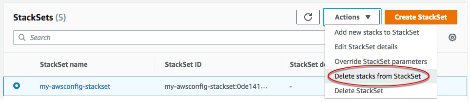

Excluir instâncias da pilha do conjunto de pilhas
Você pode excluir instâncias de pilha de um conjunto de pilhas no AWS Management Console ou usando os comandos do AWS CloudFormation na AWS CLI. Neste procedimento, excluiremos todas as pilhas.
Para um conjunto de pilhas com permissões gerenciadas pelo serviço, se você excluir instâncias de pilha de uma unidade organizacional (OU) de nível superior, a OU será removida como um destino do conjunto de pilhas.
Tópicos
Excluir instâncias de pilha usando o AWS Management Console
Abra o console do AWS CloudFormation em https://console.aws.amazon.com/cloudformation
. -
No painel de navegação, escolha StackSets. Na página StackSets, selecione o conjunto de pilhas criado em Criar um conjunto de pilhas.
-
Com o conjunto de pilhas selecionado, escolha Delete stacks from StackSet (Excluir pilhas do StackSet) no menu Actions (Ações).
 -
Na página Set deployment options (Definir opções de implantação) escolha as contas das quais excluir instâncias de pilha.
-
[Permissões autogerenciadas] Em Accounts (Contas), escolha Deploy stacks in accounts (Implantar pilhas em contas). Cole os números da sua conta de destino na caixa de texto, separando-os com vírgulas.
[Permissões gerenciadas pelo serviço] Em Accounts (Contas), escolha Deploy stacks in organizational units (Implantar pilhas em unidades organizacionais). Cole os IDs das OUs que o conjunto de pilhas tem como destino.
nota
O StackSets também exclui instâncias de pilha de qualquer OU filha das OUs de destino especificadas.

-
Em Deployment regions (Regiões de implantação), escolha as regiões das quais você deseja excluir instâncias de pilha. Neste caso, Leste dos EUA (Norte da Virgínia) Região e Região Oeste dos EUA (Oregon).
-
Em Deployment options (Opções de implantação):
-
Em Maximum concurrent accounts (Máximo de contas concorrentes), mantenha os valores padrão de Number (Número) e 1.
-
Em Failure tolerance (Tolerância a falhas), mantenha os padrões de Number (Número) e 0.
Na área Retain stacks (Reter pilhas), mantenha a configuração padrão de desabilitado.
Ao excluir pilhas de um conjunto de pilhas, a opção Reter pilhas permite que você escolha remover as instâncias de pilhas do seu conjunto de pilhas, mas salvar as pilhas e os recursos associados. Ao salvar pilhas de um conjunto de pilhas escolhendo a opção Reter pilhas, os recursos da pilha permanecem no estado atual, mas a pilha deixa de fazer parte do conjunto de pilhas. Para voltar a associar uma pilha ou adicionar uma pilha existente a um conjunto de pilhas, consulte Importação de uma pilha para o AWS CloudFormation StackSets.
Escolha Next (Próximo).
-
-
-
Na página Review (Revisar), reveja suas escolhas e selecione Submit (Enviar).
-
Depois que a exclusão da pilha for concluída, é possível verificar se as instâncias da pilha foram excluídas do conjunto de pilhas na página de detalhes do StackSet, na guia Stack instances (Instâncias da pilha).

Excluir instâncias de pilha usando o AWS CLI
Ao atuar como administrador delegado, você deve definir o parâmetro --call-as como DELEGATED_ADMIN todas as vezes que executar um comando StackSets.
--call-asDELEGATED_ADMIN
-
Execute o comando
delete-stack-instances. Para--stack-set-name, especifique o nome do conjunto de pilhasmy-awsconfig-stackset.Configure a tolerância a falhas e o máximo de contas concorrentes definindo
FailureToleranceCountcomo0eMaxConcurrentCountcomo1no parâmetro--operation-preferences, como mostrado no exemplo a seguir. Para aplicar porcentagens, useFailureTolerancePercentageouMaxConcurrentPercentage. Para a finalidade deste passo-a-passo, usaremos conta, e não porcentagem.nota
O valor de
MaxConcurrentCountdepende do valor deFailureToleranceCount.MaxConcurrentCounté, no máximo, um a mais do queMaxConcurrentCount.Como
--retain-stacksé um parâmetro obrigatório dedelete-stack-instances, se você não quiser reter (salvar) pilhas, adicione--no-retain-stacks. Nesta demonstração, adicionaremos o parâmetro--no-retain-stacks, já que não reteremos nenhuma pilha.[Permissões autogerenciadas] Substitua
account_IDpelas contas que você usou ao criar o conjunto de pilhas em Criar um conjunto de pilhas.aws cloudformation delete-stack-instances --stack-set-name my-awsconfig-stackset --accounts '["0123456789012"]' --regions '["eu-west-1"]' --operation-preferences FailureToleranceCount=0,MaxConcurrentCount=1 --no-retain-stacks[Permissões gerenciadas pelo serviço] Para
--deployment-targets, especifique o ID da organização (raiz) ou os IDs das OUs em que você criou instâncias de pilha.nota
O StackSets também exclui instâncias de pilha de qualquer OU filha das OUs de destino especificadas.
aws cloudformation delete-stack-instances --stack-set-name my-awsconfig-stackset --deployment-targets OrganizationalUnitIds='["ou-rcuk-1x5jlwo", "ou-rcuk-slr5lh0a"]' --regions '["eu-west-1"]' --no-retain-stacks -
Opcionalmente, depois que a exclusão da pilha for concluída, verifique se as instâncias de pilha foram excluídas do conjunto de pilhas executando o comando
describe-stack-set-operationpara mostrar o status e os resultados da operação de exclusão de pilhas. Para--operation-id, use o ID de operação retornado pelo comandodelete-stack-instances.aws cloudformation describe-stack-set-operation --stack-set-namestackSetName--operation-idddf16f54-ad62-4d9b-b0ab-3ed8e9example